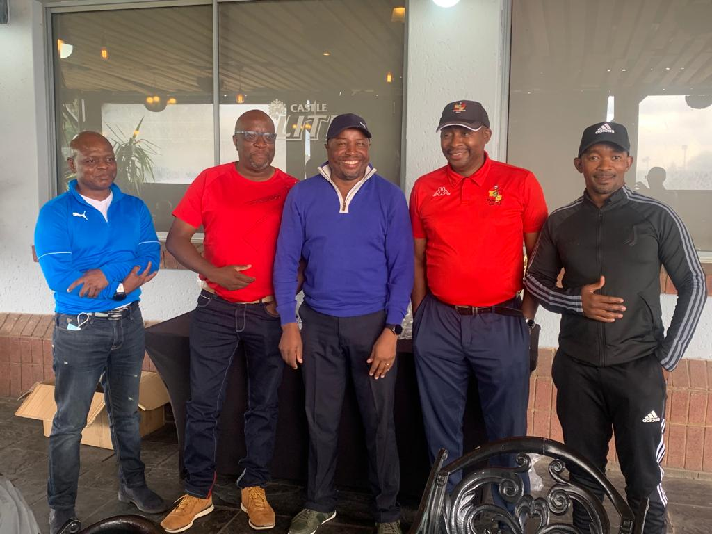

The genesis of RGC
Above is our group photo at the tee-box, at Vaal De Grace Country Club during our year-end 2021 end of the year tour.
Renaissance golf club is a social golf club for amateur golf enthusiasts around Gauteng. Before it was launched as an official club, a few of the founding members used to regularly play a round of golf, every Sunday without fail, a tradition still in full effect at the club, at one of the many golf courses in Gauteng province. As beginner golfers, we particularly loved to play these courses (NB: the list is not exhaustive but we particularly played these extensively),
- Leeuwkop Golf Course,
- Services Golf Club,
- Crown Mines Golf Club, and
- Waterkloof Country Club
After a while a decision was made to make our Sunday game official and a part of a fully constituted body with memberships. For g those who have been with the club from its genesis, have witnessed its growth from having a membership of about 12 members to its current 48 strong members. The typical profile of our membership is mainly middle age, professional or self-employed individuals. Typical age profile is above 40 years to just above 60 years. The one thing binding us all is our love for the game of golf.
Click here to see the club's members in good standing (MIGS).
The 2022-2023 Executive Committee

From left to right,
- Lucas Mogashoa - Chairman
- Ishmael Soso Mokhoka - Deputy Captain
- Malose Mokgohloa - Treasurer
- Peter Nkwe - Deputy Captain
- Masiza Qutu - Captain
What you need to know
The main object of the social golf club is to ensure that the guys have a regular Sunday game. Owing to
the fact we did not wish to encumber our Sunday games with too much red tape we decided against documenting a
constitution for the club. However, over time based on our experiences, the various executive committees
formulated what we loosely consider a code of conduct- emcompassing our rules of engagement. Briefly stated the
rules are that, all members are expected to,
- have an official SAGA handicap
- be familiar will the common basic rules of the game
- adhere to the uniform of the day for club official games
- pay the annual subscription fee and any other punitive fees levied during the course of the year
- abhor violence in all its forms
- show respectful and courteous to fellow members
- be honest in all matters golf, i.e. scoring, rules adjudication and intepretation